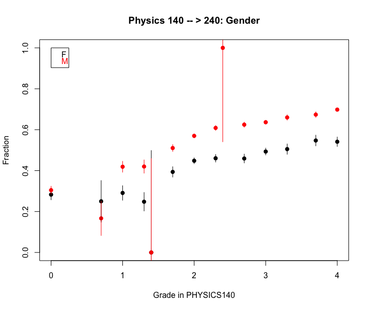

Background
Some fraction of students take a course and do not continue on to the next in a natural sequence. This may be their original intent: some engineering majors require only one semester of physics, and thus those majors will not continue to the second semester regardless. Others however, may npt continue for other reasons, for instance the grade they received.
Analysis
Assigning causes to these actions is difficult but we can gain some first insights by looking at the fraction of males and females that persist from Physics 140 (Physics I) to Physics 240 (Physics II) as a function of the grade they received in the first course (Physics 140):
A few things are apparent. First, the persistence fraction peaks at about 60% for individuals with the highest grades in Physics 140, and this fraction decreases with decreasing grade. Second, the persistence fraction is overall smaller for females, regardless of grade.
Discussion
Why is this? Are students responding and making decisions based on grades? Are the females in these courses an inherently different population (aside from the obvious) than the males?